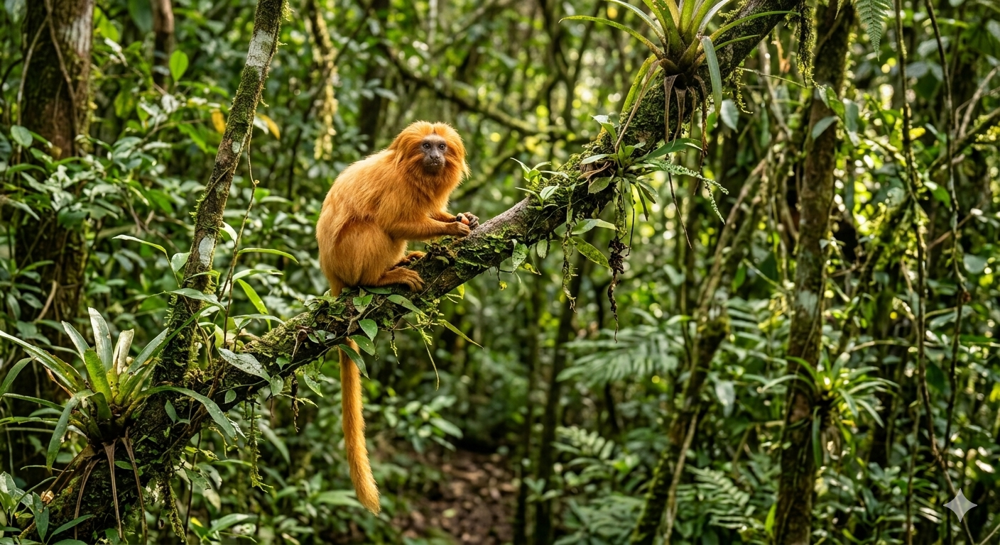
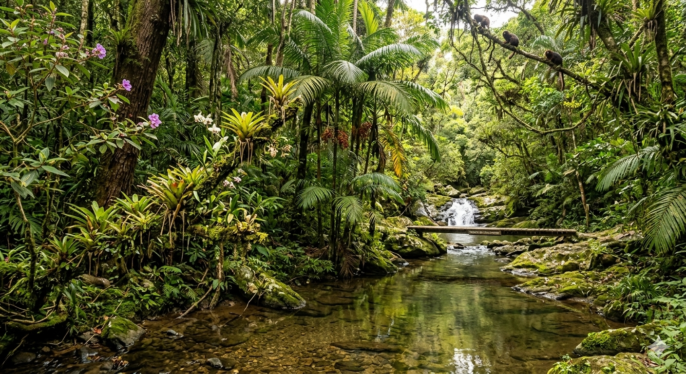
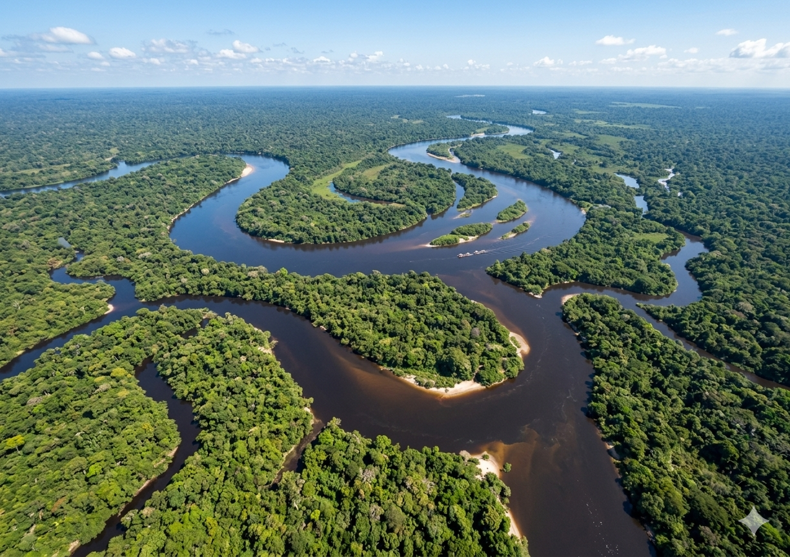
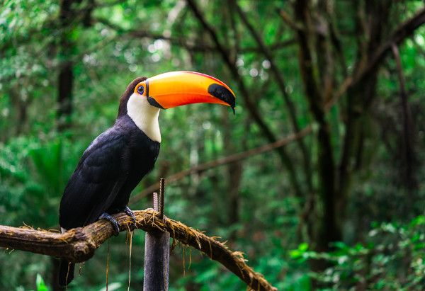
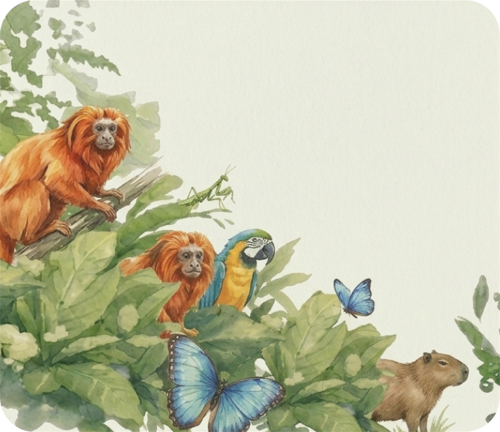

Fauna
Entenda mais sobre a fauna
Ler mais
Restaurando e preservando um bioma rico em diversidade, beleza e cultura
Fauna


A Mata Atlântica ainda pode ser salva

Entenda mais sobre a situação crítica das águas da Mata Atlântica

Fome piora situação da onça pintada na Mata Atlântica

O projeto Pindorama foi criado com a intenção de aumentar a conscientização sobre a situação da Mata Atlântica. Há mais de um século a floresta vêm sendo degradada por diversos fatores, como a poluição, de rios, lagos e bacias hidrográficas, caça ilegal e desmatamento desenfreado. Devido a tamanha importância da Mata Atlântica na nossa vida, o projeto Pindorama visa divulgar ONGs que trabalham na recuperação da fauna, flora e parte hidrográfica do bioma.